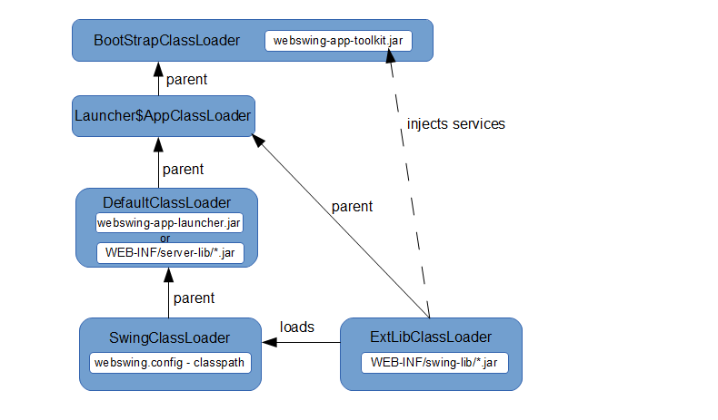

Development guide
If you would like to join the project and fix a bug or add new feature, this quick start guide may help you do it.
Setup development environment
Setting up development is easy. Just follow these steps:
-
Fork the project on Bitbucket (fork webswing). If you only want to play around you can skip this step and use the master branch or any version tag in the Checkout step.
-
Checkout code with your favorite Git client. If you don't have your own fork you can checkout master branch here.
-
Install supported version of JDK and Maven. (Maven has to be configured to run with supported JDK otherwise you may encounter compilation errors)
-
Import to your favorite IDE as maven projects.
Note: JDK8 and Maven3 are needed for building Webswing. If you are using Linux, only 64-bit version is working at the moment.
Building Webswing
Maven is used for building Webswing. To trigger build run following command from the repository root folder:
mvn -Pbuild,release clean install
Here we are running the build with two profiles. Profile build is the default profile and active by default and tells maven how to package everything. Profile release only adds a javascript minification step to build.
Result of the build is located in webswing-assembly/dist folder.
One more special profile is available in the maven configuration:
mvn -Pdev clean install
Running the build with profile dev will directly start jetty in the maven. Huge advantage of this profile is that changes of javascript files (those located in webswing-server project) are picked up immediately without restart of jetty.
Project structure
Webswing is developed as standard modular maven project with seven separate maven modules within parent project. Following picture shows the structure of maven modules/projects.
webswing is the parent maven project that contains all modules.
documentation folder contains source files for this documentation.
webswing-admin is the Admin console implementation.
webswing-app-toolkit module contains the custom implementation of java.awt.Toolkit called WebToolkit. This project must not contain any external dependencies, because it is part of boot classpath when running the swing application instance. This module contains also model classes for communication with web.
webswing-app-toolkit-java6, webswing-app-toolkit-java7 and webswing-app-toolkit-java8 module implements java version specific methods and interfaces.
webswing-app-launcher module takes care of correct initialization of swing application's classpath and executing the main method of the swing application in special webswing classloader.
webswing-app-interface module isolates all necessary dependencies like JMS client and pdf generation libraries. This is necessary to avoid classpath polution of swing applications, which may lead to classloading issues.
webswing-server project is the most important project responsible for managing webswing sessions. This project contains the web application files (javascript) for displaying swing applications in browser and also the admin console sources. This project generates the executable war archive which packages the rest of the webswing projects and its dependencies.
webswing-server-launcher module is responsible for launching the embedded jetty server and deploying the webswing-server.war web application in it. This module also parses the command-line options.
webswing-directdraw module implements the new rendering method, which streams the swing rendered image as canvas paint instructions instead of png files.
webswing-assembly module is used to create distribution package with demo application and start scripts and default configuration files.
Packaging structure
Webswing uses maven to create an executable war archive with embedded jetty server. The build process for the war file is defined in webswing-server project's pom.xml file. This pom file defines dependency on libraries used across all modules and the packaging process then sorts them to three separate categories (folders within the war file).
-
Swing instance dependencies are stored in
/WEB-INF/swing-lib/directory. These libraries are used by the webswing-app-interface project to allow communication with JMS queues, encode png images or generate pdf files. -
Jetty Web server dependencies are stored in
/WEB-INF/server-lib/folder. These libraries are the embedded jetty server and thewebswing-server-launchermodule, which takes care of starting this server. -
Standard web application dependencies are stored in
/WEB-INF/lib/folder. These libraries are used by thewebswing-serverweb application for handling queries from browsers and passing rendered screen from swing instance to client's browser window.
Dependencies in classloading
Webswing uses custom classloaders to achieve classpath isolation and also bytecode modifications where necessary. Following picture describes the way webswing loads swing applications:

Webswing uses the same main.Main class to start the server and also to start swing instances. Based on input parameters, this class initializes the DefaultClassLoader classpath and delegates the initialization to the server launcher (webswing-server-launcher) or the swing launcher class (webswing-app-launcher).
Above picture shows the swing instance execution case, where the main.Main class creates also ExtLibClassLoader with classpath referring to /WEB-INF/swing-lib folder. After this classloader is created, singleton services (pdf generator, jms connection, etc.) are instantiated and injected to WebToolkit, which is used by swing applications.
One of the mentioned services is SwingClassloaderFactory, which instantiates the special classloader with bytecode instrumentation capabilities, which loads the swing application.
DirectDraw rendering
DirectDraw (DD) is the new way of rendering swing application to html canvas element. Compared to the old method, where the rendering is based on png images, this new way directly interprets the draw instructions on canvas. So the difference is similar as if you compare raster and vector graphics. DD should bring performance improvements in rendering speed and data transfer bandwidth size because it reduces the use of expensive png encoding.
Implementation of DD is located in websiwng-directdraw module and its two sub-modules.
webswing-directdraw-server contains the server component, which is mainly the javascript for interpreting the swing draw instructions in html canvas. (webswing-dd.js)
webswing-directdraw-swing is the library for swing application that allows to capture swing draw instructions and encode them into efficient binary format.
Debugging
It is often necessary to debug swing application running within webswing to analyze eventual webswing specific problems. This is very easy with webswing. We assume that your application is already configured in webswing.config file. To debug your swing application follow this steps:
-
Open webswing.config file and change the "debug" property of your application to true.
-
Start Webswing server as usual.
-
Open Webswing page with
debugPorturl parameter (ie http://localhost:8080/?debugPort=8000, Login to Webswing and choose your application on application selection screen. -
You will see log message in console saying that java process is waiting for debugger connection on port 8000. Now only set up your favorite debugger to connect to this port.